DataBreachLeaks Webinar
- Introduction
- Two examples on the use of whistleblowing platforms to initiate strategic litigation
- Example 1: Nasoft data breach (Mexico)
- Example 2: 15MpaRato XnetLeaks
- Organisational and information-sharing mechanisms
GDPR
- 1 year since it has come into effect
- Sharp increase in both data breach complaints, and data breach notifications
- Article 33 and 34. Data breach notification to data owner and DPA.
- Article 80. Collective redress.
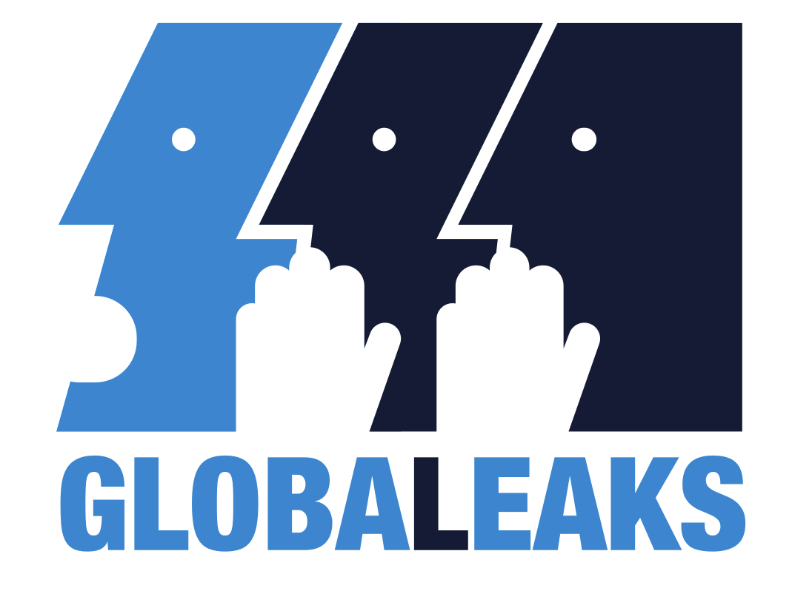
- Since 2011
- FLOSS
- User friendly - Setting up a GL node as easy as installing WordPress
GlobaLeaks - Motivations
- We are security people, we can do this better
- Lots of people want to fight corruption without taking that much responsibility. If the risk profile of everyone who runs a leak node is reduced, there will be lot more leak nodes.
Example 1: Nasoft
- Banamex = Mexico's 2nd biggest bank
- Hyperbole: Banamex.com HACKED! citigroup.com HACKED!
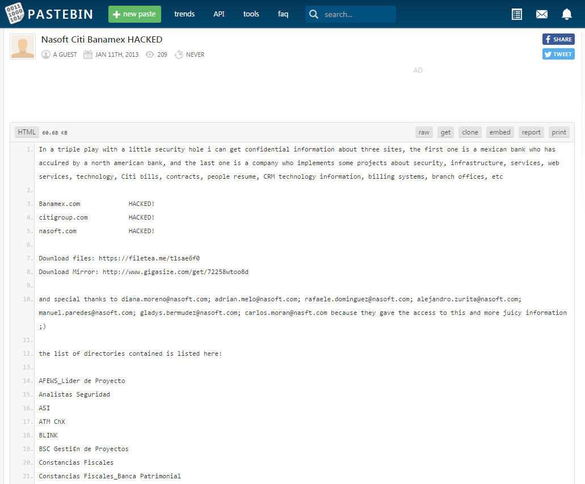
DataBreachLeaks - Nasoft
- Pastebin dump 2013
- DataBreachLeaks launch 2016
- Nasoft leak on DataBreachLeaks 2017
Nasoft document cache
- Excel
- Word
- PDF
- PowerPoint
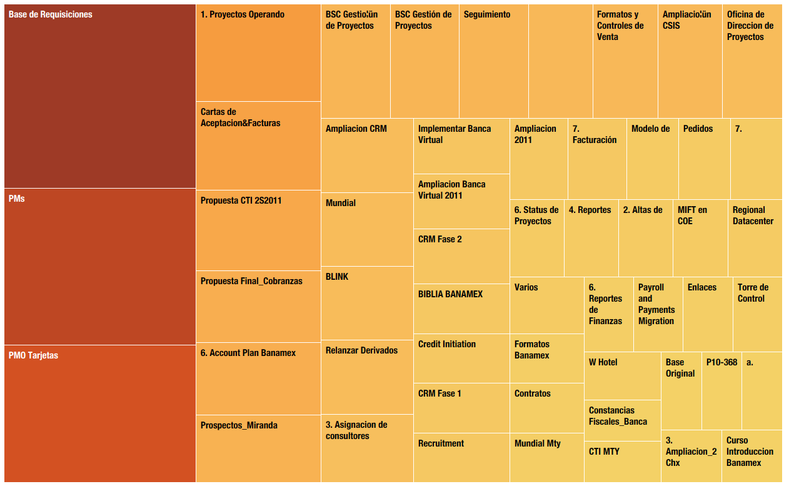
Human Resources documents
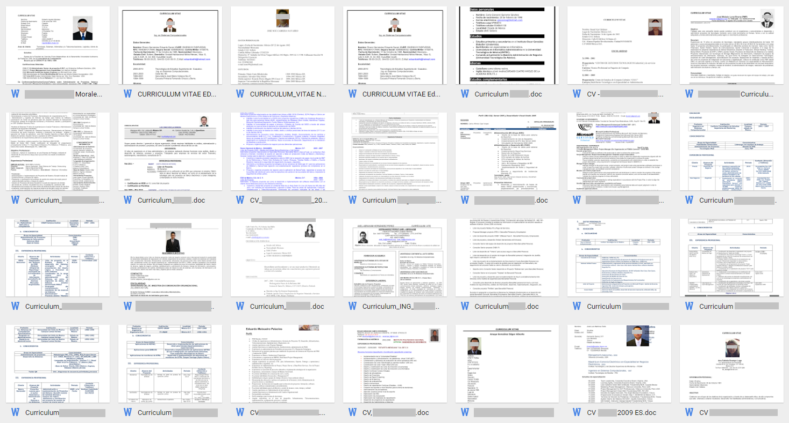
Federal Law on Protection of Personal Data Held by Individuals
Afectación significativa a los derechos patrimoniales y morales
Leak verification - Last print date
- Uniform peaks on particular dates: June 2001, June 2003, June 2009, June 2010
- Perhaps Nasoft writes some sort of report on June
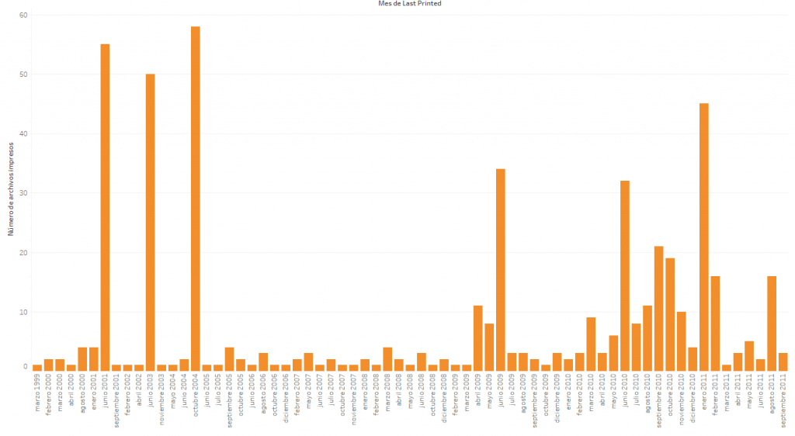
Verify leaks - Internet search
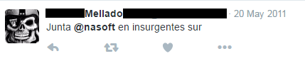
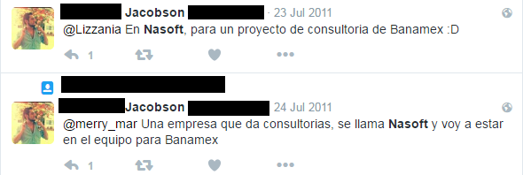
Determine whether or not the persons mentioned in the documents are actually, or were at any time, employees of the company.
Example 2: 15MpaRato
- Our team consists of normal, ordinary people, not bankers, lawyers, economists or attorneys
- 2011: Anti-austerity protests in Spain
- 2012: Why don't we have Rato sent to prison in five years' time?
- Attacking an individual is a fascist behaviour [...] What has to be exposed is the corruption of a system, not the misery of life.
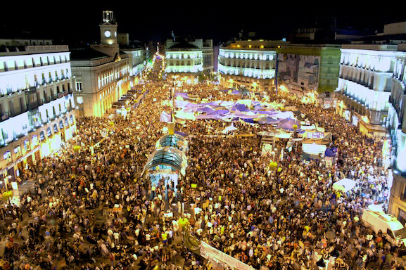
Who is Rodrigo Rato?
- IMF managing director
- Spanish Vice-president, Spanish Minister of Economy
- Caja Madrid / Bankia president - Bloomberg Worst CEO's of 2012
- Almost half of the EU bailout money in Spain went to Bankia
15MpaRato - Xnetleaks
- Whistleblower: I have a large amount of information that I think paints a very clear picture of institutional corruption in Spain.
- Caja Madrid emails (What years?)
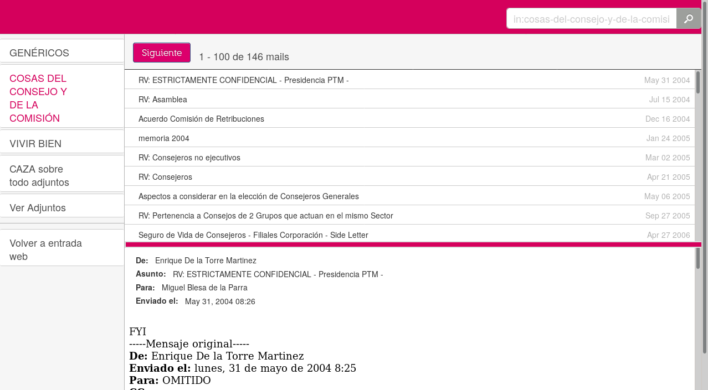
15MpaRato - "Black credit cards"
- Issued to a who's who of Spanish political life
- 15.5 million euro were spent between 1999 and 2012
4.5 year embezzelment sentence for Rato (2017)
How could the Anti-corruption Prosecutor know of the existence of these Black Cards which, apparently, did not appear in Bankia’s accounts? The same way as every other citizen, through the documents published by the press thanks to our leak.
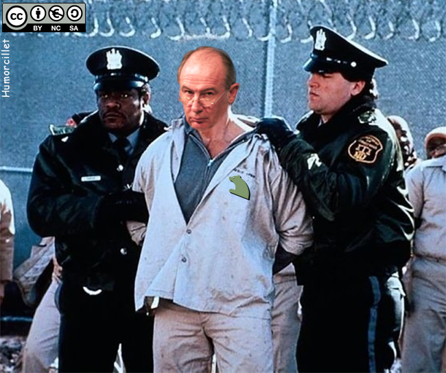
Flexibility
- ad-hoc network
- There is no one on the team who is fluent in Spanish, although more than half the leaked documents are in that language
2 functionalities
All members of the team are recipients of any information submitted by whistleblowers
- An online anonymous mailbox accessed by a whistleblower
- The interface where DBL team members download the documents provided by whistleblowers
Communicate with Whistleblower via GL
- It's up to the whistleblower to decide if there’s going to be any further communications beyond the submitted documents
- If used properly, GL can guarantee that the communications that it mediates with the whistleblowers be anonymous and encrypted
- Within GL, our communications with whistleblowers would take the form of comments akin to discussion threads in internet forums
- If the submission is deleted or if it expires, communications with whistleblower via GlobaLeaks are no longer possible
Communicate with Whistleblower outside GL
- Is it necessary?
- Care must be taken for all communications with whistleblowers outside of GL to be encrypted
- A million options: Email, OTR, Wire, etc
- Do a threat analysis
Counterexample: Hale and The Intercept
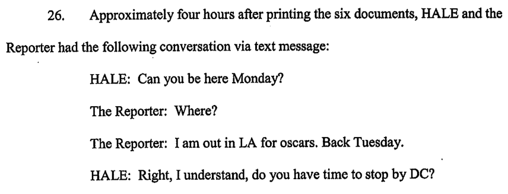
- Like Snowden, Hale was a US defense contractor
- Sent documents about drone warfare to The Intercept
- Unencrypted comms included in indictment that sees Hale facing up to 50 years in prison